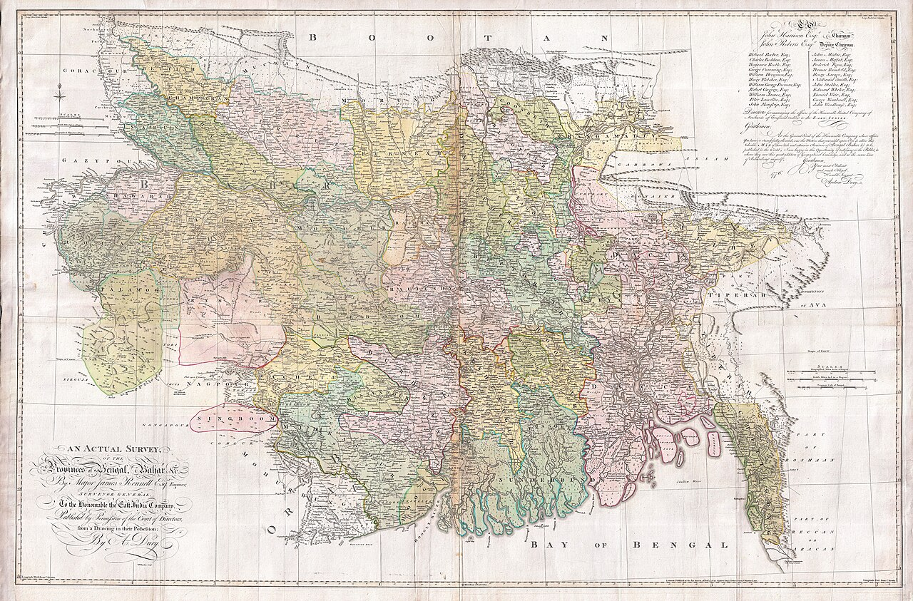
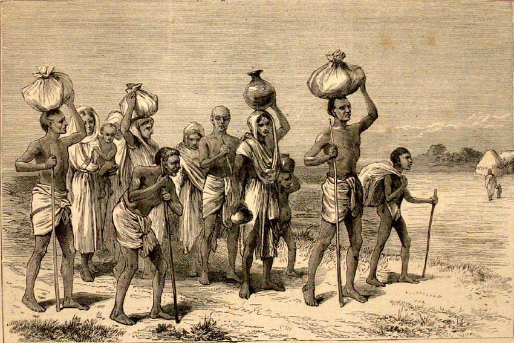

Chapter Six
1770
"The revenue return for this district shows no shortfall. The dead are not a line item."
— Company collector's report, Bengal, 1770
1770: What Mulvey Saw

Chapter Sections
I. Grey Water
By the time most of London hears anything, it's already over. Ten million people, more or less, have starved to death in Bengal since the rains failed — a third of the province, gone in about two years, while the Company's revenue collectors kept right on collecting. The news reaches Wapping the way news from India always reaches Wapping: slow, secondhand, carried by men who were there and can't talk about much else.
Some years have passed since Plassey. Nobody's counting anymore. The talk in the bar has changed to match — it used to be ships and cargo and whether the French would try something. Now it's Bengal. Not Bengal the trading post. Bengal the territory. Bengal the thing the Company owns, or administers, or governs, whatever word gets used this week to avoid saying rule. Everyone in this room knows the Company rules Bengal now. The only people who didn't know it, until the rains failed, were the people of Bengal.
Hannah wipes the bar with a rag that has seen better centuries. The place is busier than it used to be — more Company men, more of the particular breed of Londoner who can smell money and follows the scent.
Something is coming. It shows in the faces of the men getting off the ships lately — a different set of faces than came back after Plassey. War has a shape and an ending. What comes after war has neither, and it shows.
II. The Thin Man
He comes in on a Tuesday. Thin — not ship-thin, not fever-thin. The thinness of a man who has stopped eating on purpose, because eating is connected in his mind to something he can't think about without the room tilting.
He sits. Hannah asks what he wants. Water, he says. She brings it. Asks if he wants food. He shakes his head — not no, not not hungry, just the shake. Door closed. Don't ask again.
His name is Mulvey. Company man in Bengal, some kind of clerk with a desk and a small authority over people whose language he never learned. He's come back to London. He's come back wrong.
He sits very still, staring at the grain of the wood like it might have something written on it. A cheerful sort at the bar tries to talk to him once. Mulvey turns his head, looks at him, and whatever the cheerful man sees in that look sends him to another seat for the rest of the night.
Three days he sits like that. Water, not food, not talking. On the third evening he switches to gin, which is a bad sign in a man who's been avoiding drink — it means the water stopped working.
III. Ten Million

The crop failed, he says. Not to anyone in particular.
A man down the bar looks up. Which crop?
Rice. Monsoon came late in sixty-nine, then didn't come at all where it mattered. Bengal lives on rice. Not wheat, not barley. When the rice goes, everything goes.
Bad harvest, the man says. Happens. We had a bad one here in forty and forty-one.
Mulvey's mouth makes the shape a smile would make, if a smile were still possible for him, which it isn't. Bad harvest. Yes. And then the Company decided what to do about it. That's the part I came back with.
The bar's gone quieter. Not silent — this is a tavern, not a church — but quieter. Company has that effect in Wapping.
The peasants grow rice, he says. Always have. But the Company wants opium, because the Chinese buy opium. Wants indigo, because London buys indigo for dye. So the Company says: grow this instead. And when the peasants say, if we grow opium we can't eat opium, the Company says that isn't its concern.
He drinks.
That was the policy before the famine. Cash crops instead of food. Then the rice failed, and there was no food, because the food had already been replaced — and the Company's response was to collect the taxes anyway.
Silence now. Real silence.
The collectors went into the starving districts and said: you owe us what you owed last year. More, because we've raised the assessment. And when the people said we have nothing, our children are dying, the collectors said sell something. Sell your tools. Nothing is not an acceptable answer. The Company has targets.
His voice cracks, once, like a wall struck too many times.
And there was grain. Not much. But some — and the Company's own men hoarded it. Waited for the price to climb high enough that no starving person could pay it. Then sold.
How many? someone asks from the back.
Mulvey doesn't have to think about the number.
Ten million. A third of Bengal. One in three, dead, in a land that was one of the richest on earth before the Company arrived. And the Company's answer to a third of a province starving to death was to raise taxes, hoard grain, and make the survivors grow more opium.
Hannah has stopped wiping the bar. She's just standing there with the rag in her hand.
I was there, Mulvey says. I walked through villages where everyone was dead. Not the old, not the sick. Everyone. I saw a child eating mud. The drought was an act of God. The famine was an act of the Company. The drought killed the rice. The Company killed the people.
He finishes the gin. Signals for another. Hannah's hand is steady pouring it; nothing else in the room is.
And the assessments won't come down, he says. That's the part to understand. Famine or no famine, flood or drought, the number is the number. There's already talk in Calcutta of fixing it forever — settling the revenue once and never letting it move again, whatever the sky does. The Company gets paid regardless.
He goes quiet. The bar's noise comes back slowly, the way it does, because men can only sit with someone else's horror for so long. Mulvey doesn't rejoin it. He's somewhere that isn't this room.
IV. Aldridge
There is a man three stools down who has said nothing all evening, which in itself would be nothing worth noting, except that Mulvey has been watching him without meaning to since the moment he came in — well-fed, well-dressed in a way that doesn't belong to a Company clerk's wages, ordering claret instead of ale, the kind of comfortable that Bengal has not been kind to anyone else Mulvey has met this side of a collector's office.
He knows the face. Not well — seen twice, three years apart. Once across a warehouse yard in Murshidabad, where sacks of rice sat under armed guard while a queue of starving people were turned away from it. Once at an auction months later, where the same rice sold for eleven times what it had cost to grow, to buyers who could still afford eleven times anything. The man's name was Aldridge then. It is, apparently, still Aldridge now, sitting in a London bar with a good claret and no memory at all, by the untroubled look of him, of a warehouse yard in Murshidabad.
Mulvey stands. It's the first thing he's done all evening that isn't drinking, and the room notices the change in him before it notices where he's walking.
You had grain, he says. Not loud. He doesn't need to be loud; the bar has already gone quiet around Hannah's stopped rag, around the gin, around the whole shape of the evening, and quiet carries further than shouting does. Murshidabad. Seventeen seventy. You had grain in a warehouse and armed men on the door, and you waited.
Aldridge looks up slowly, the look of a man deciding whether an interruption is worth acknowledging. I'm sure I don't know you, sir.
You wouldn't. I was one of the men counting the bodies your price put in the ground. Mulvey's hands are shaking again, worse than the gin's doing it this time. I watched you sell that rice in Calcutta for eleven times what you paid the peasant who grew it and couldn't afford a handful of his own crop back. I have your face. I don't forget faces that watched what I watched and felt nothing.
Prices rise in a famine, Aldridge says, unhurried, the practiced calm of a man who has given this answer before and found it holds. That isn't hoarding. That's a market responding to scarcity. I didn't create the drought.
You created the difference between a man who could still eat and a man who couldn't, Mulvey says. That was entirely your doing. Nobody else's.
Aldridge sets down his glass. There is, for the first time, something behind his eyes that isn't quite composure — not guilt, nothing so useful as guilt, only the flat irritation of a man being made to discuss numbers he'd rather leave filed. I made a living within the law, in a country I did not choose to be poor. If you want someone to blame for ten million dead, sir, I'd suggest you start with the sky that didn't rain, not the man who happened to own a warehouse when it didn't.
For a moment it looks as though Mulvey might go further than words — his hand has closed on the back of a chair, knuckles gone white the way they haven't since Bengal — and the room holds its breath the way rooms do when a quiet man looks suddenly capable of something. Then his hand opens. He has not come this far, he seems to decide, to be hanged for the one man in England he can actually reach.
I hope you remember my face too, one day, he says instead, quieter now. I hope it costs you a night's sleep eventually. Somewhere. Some year.
Aldridge doesn't answer that. Finishes his claret at his own pace, the way a man finishes a drink he intends to enjoy regardless of the company, and signals Hannah for the reckoning. He leaves without hurrying, and the door closing behind him makes no more sound than it ever does.
Mulvey sits back down. His hands don't stop shaking for the rest of the night, though whether that's the gin or something else, nobody in the bar could rightly say, least of all him.
V. The Gang
He comes in like weather. Big, not tall — the particular thickness of a man who moves other men around for a living. A face that looks like it enjoys its work, which, given what the work is, is the worst thing about him.
Pint, he tells Hannah. Drinks half in one go. Good haul this morning, he announces to nobody and everybody. Twelve off Ratcliffe Highway. The King gets his crew either way.
Nobody answers him. Talking to a press-gang officer is a good way to end up on a ship.
Busy season coming, he says, to the room. The Spaniards have thrown us off the Falklands — some rock at the bottom of the world nobody in this bar could find on a chart, and the King wants a fleet fitted out over it by spring. Forty ships want crews. Do you know what forty ships' worth of crews looks like, gathered off streets like yours? He smiles. You will.
Over a rock, someone mutters. Ten thousand miles away.
Over the principle of the rock, the officer corrects him, cheerfully. Nobody fights over what a thing is worth. They fight over who's allowed to take it. I'd have thought this street would know that better than most, the company it keeps.
He drinks his second pint, louder now. Men break, he says, almost thoughtful for a second. All of them, eventually — the lads I drag off the street, the Company's men in Bengal, whole provinces, by what your quiet friend there's been saying. Just a question of when.
He finishes, stands, puts on his hat, and leaves — and the bar exhales the way a room does when something dangerous has gone out the door.
VI. The Man from the Water
He comes in the side door, the one the delivery boys use. Small. Indian. Clothes that aren't his, given to him or taken off a pile. A Lascar — one of the thousands the Company ships across the world and pays less than English crew, and abandons here once the unloading's done, because passage home costs money and the Company's accounts don't have a line for it.
He sits at a corner table. Hannah brings water, then food he didn't ask for, and leaves without a word — she's fed enough of these men to know not to make it a conversation.
Ship, he says eventually. Gone. No home.
Three words holding a life in them. He finishes the bread, drinks the water, and watches the door.
VII. What the Machine Keeps
The press officer comes back later, cheerful the way men are cheerful after doing violence. Mulvey is still at the bar, on his fourth or fifth gin now. The Lascar still has his corner.
You, the officer says to Mulvey. Look like you need a purpose. Navy's always hiring.
I've had adventure, Mulvey says. I don't want more.
Where've you been?
Bengal. Company service.
Ah, the officer says, the way a man nods at something he thinks he understands. My brother was Company too. Clerk in Madras. Came home with five hundred pounds and a fever, and died above a chandler's shop in Rotherhithe at thirty-four. Lucky, my mother called him. Five hundred pounds and a fever. That's luck, in this trade.
Mulvey doesn't answer that. The Company's the same as you, he says instead. Doesn't matter what Bengal wants. Only what the Company wants.
Something passes between them — recognition, maybe. Two men on opposite ends of the same machine. One takes people and puts them on ships. The other takes land and puts it on a ledger. Neither asks first.
From the corner, the Lascar speaks, his English broken but the room quiet enough to carry it.
Ship. He points at the officer, then himself. You take men. Put on ship. Ship go. Leave men. No home. Company take. Company take everything.
The officer looks at him properly for the first time. At the clothes that aren't his. You're a Lascar, he says. Which ship? The Lascar names one — a Company ship, the one that brought him and left him. You should ask the Company for passage home, the officer says. They owe you that.
The Lascar shakes his head. Company. No.
The officer doesn't push it. He finishes his pint, scans the room once more out of habit, and this time takes no one. The door shuts behind him.
Mulvey and the Lascar don't speak again. They don't need to. A clerk who watched ten million people starve, and a sailor abandoned on a dock three thousand miles from home — different sides of the same machine, and both of them know it does not stop for anyone's asking.
VIII. What the River Knows
They leave eventually, all three, back into whatever the night has for them. The bar holds what's left — ale, and a room that has heard this shape of story before, told by different men in different years, always with roughly the same ending.
The Company started as a room full of merchants with a charter and a hope. It is now a government. It commands armies, rules millions, moves money across the whole width of the world, and did all of it inside two hundred years — the blink of an eye, measured against stone.
Ten million does not get smaller with repeating. Hannah puts the chairs up. Wipes the counter down one more time, slower than usual tonight.
Outside, the river is black, carrying whatever the docks put into it the way it always has — grain, revenue, silence, men. It does not keep the count. It never has.